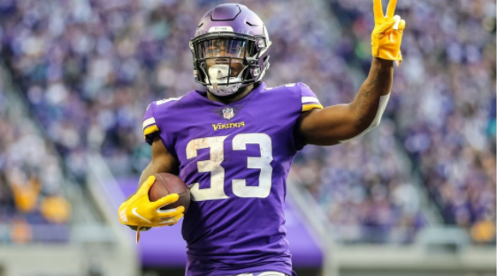

Your First Round Fantasy Pick
Throughout the history of Fantasy football, the belief has always been that RBs are the most valuable position. Therefore, they are the most sought after, always being drafted in the first round. If not a running back…